| 北大高尔夫队参加2018“求是杯”第五届加拿大高校高尔夫联赛的第一场个人比赛，取得总分第四的佳绩 |
|
七月 22, 2018
北大高尔夫队参加2018“求是杯”第五届加拿大高校高尔夫联赛的第一场个人比赛，取得总分第四的佳绩 加拿大北京大学校友会 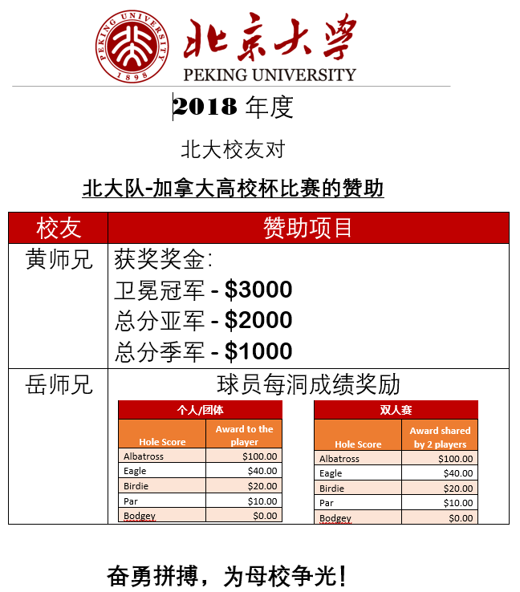 7月22日，经过一年紧张筹备的2018“求是杯”第五届加拿大高校高尔夫联赛的第一场个人比赛如期在多伦多顶级公众球场Cooper Creek Golf Club隆重开杆。 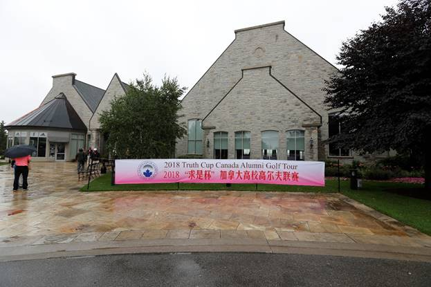 北大高尔夫队参赛队员： 1、 黄求恩 2、 方鹏 3、 李曙新 4、 白博明 5、 陈小平 6、 李中法 北大取得总分第四的佳绩。考虑到很多校友高尔夫选手因为旅行不能参加比赛，这个成绩对于我们是非常理想的。 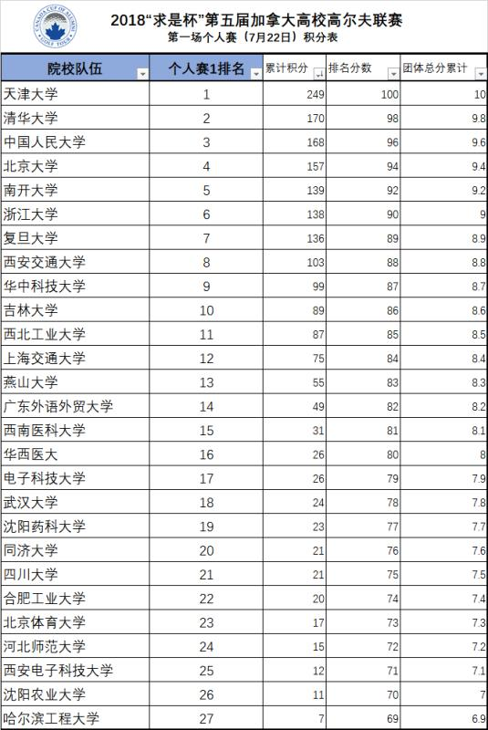 虽然当天一早浓云密布，大雨阵阵，但按照高尔夫惯例，没有雷雨比赛照常进行，组委会成员、义工球场布置组、后勤保障组和签到计分组早在9:00就已入场各司其职，提前做好相关现场的布置工作。 北大校友们早早来到球场，签到、练球、聊天、聚会，好不热闹。虽然小雨不停地下，丝毫不影响大家的心情。 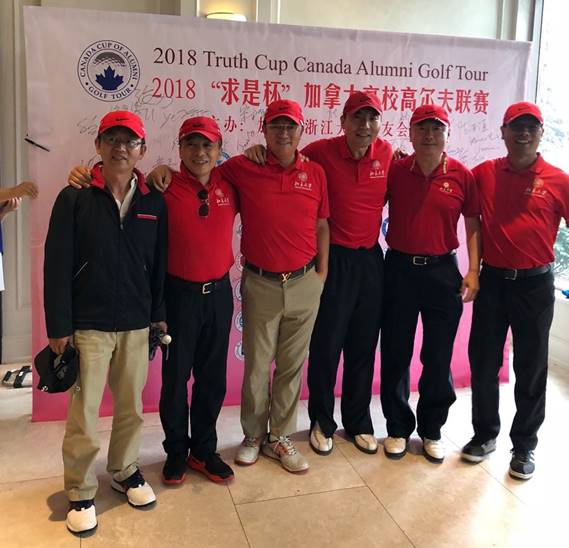 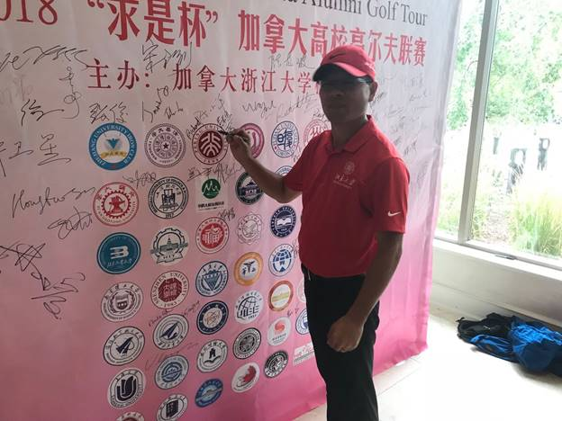 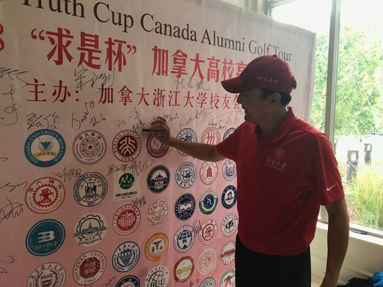 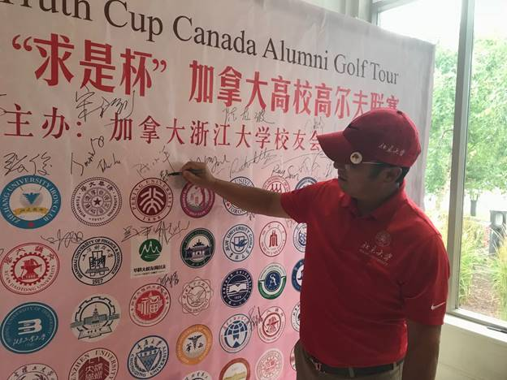 大雨也丝毫没有减少队员的参赛热情，早上11点前后，几乎所有报名参赛的近百名球友均如期抵达陆续报到，有些是多年的球场老友，有些则初次参加比赛，颇有网友见面的热情。大家聚集到Cooper Creek Golf Club，相识，寒暄，切磋，叙旧，合影，相约练球。 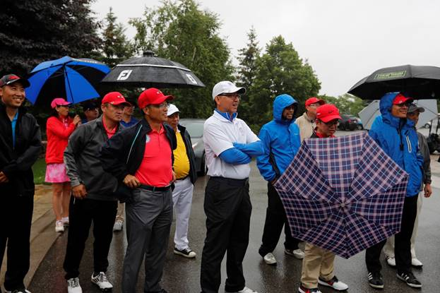 雨天丝毫没有打乱我们细致的组织工作，一切井然有序，球友们带上组委会为队员们准备好能量棒和午餐餐盒， 24个参赛小组、48辆球车整装齐发，准时在1点30分同时抵达各自的出发洞。 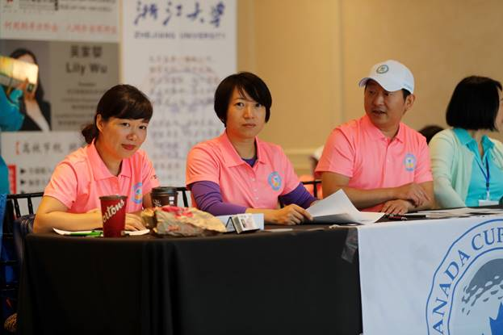 巡场组长冒雨宣布规则 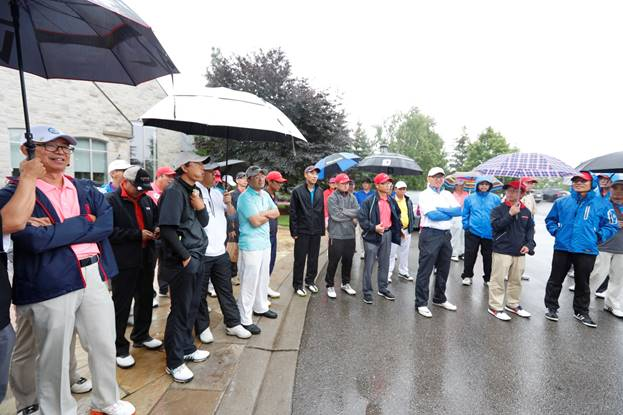 比赛冒雨开始，开球之后45分钟、前3-4洞的比赛是在中雨中进行，所有球友都是激情荡漾，均没有丝毫退却，这就是高尔夫的魅力。雨渐小渐停，队员们也渐入佳境，在随后舒适的天气中享受了这场酝酿已久的盛宴。 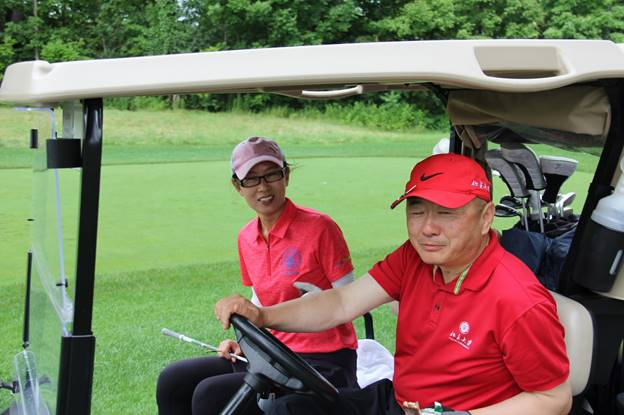 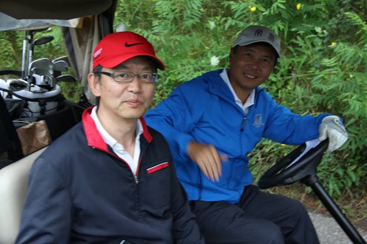 摄影组奔波于球场各洞之间，捕捉着球友们专注、欢乐的美妙瞬间。 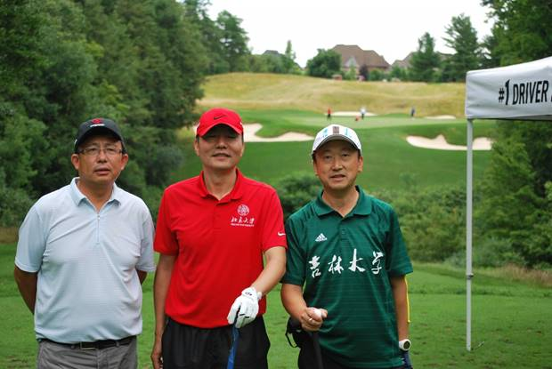 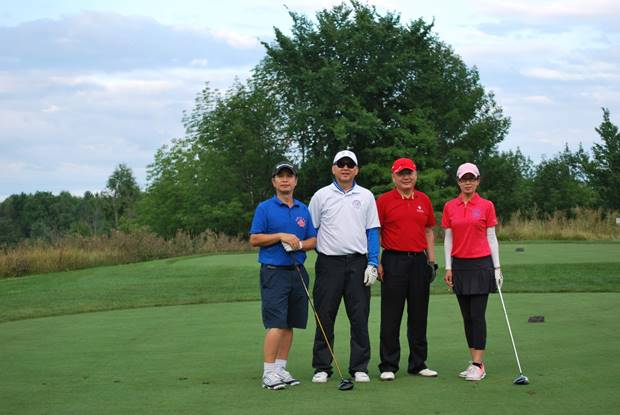 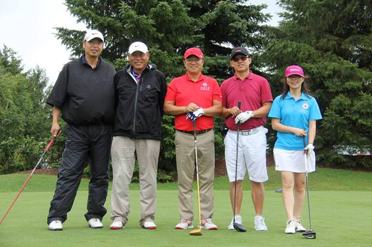 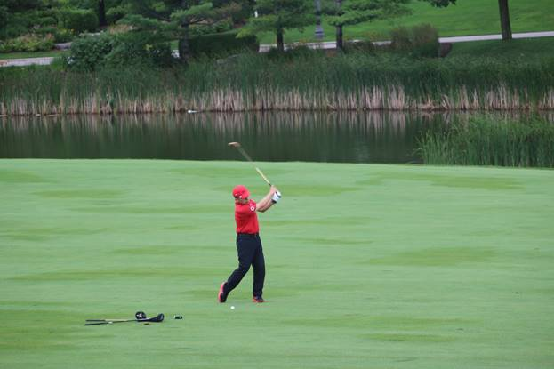 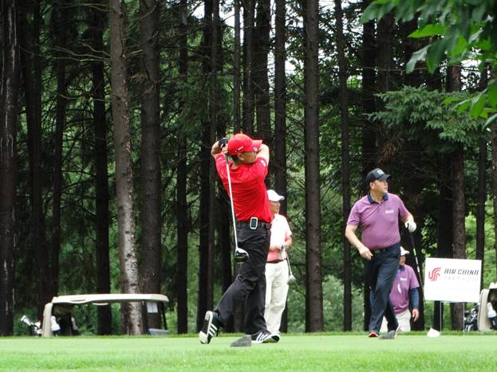 比赛低差点的前几组，在4.5-5小时陆续完成比赛，整个比赛基本控制在5.5小时以内完成。 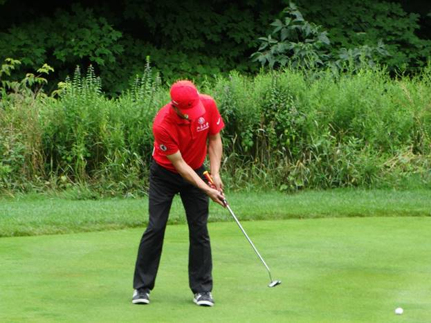 这场比赛的组织安排和球场秩序，得到全体球友最广泛的好评和称道，似乎完全忘记了开场时的大雨对击球的影响和干扰，对浙大组委会和全体义工大加赞誉，认为本场比赛的组织够精致、有秩序，节奏掌控非常舒适。 我们非常感谢各位球友的积极参与以及义工们的辛苦工作，预祝接下来三场比赛队员们更创佳绩。 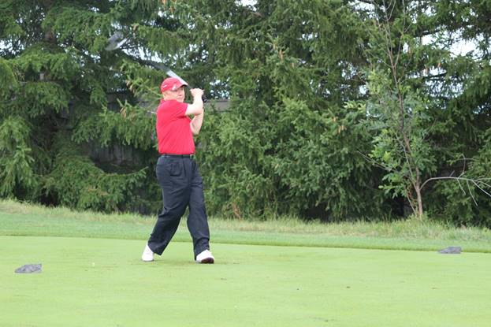 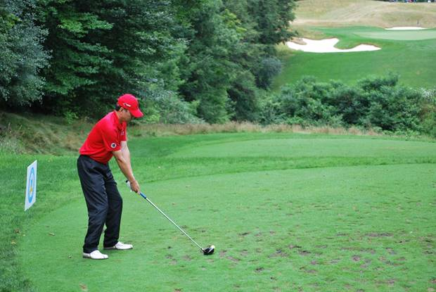 |